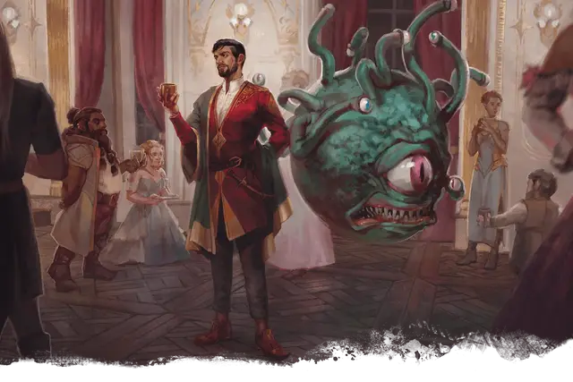

Аррант Квилл
Arrant Quill
Средний Гуманоид (Человек), нейтрально-злой, именной НИП

Класс Доспеха 14
Хиты 135 (18к8 + 54)
Скорость 30 футов
| мод | спас | ||
|---|---|---|---|
| СИЛ | 10 | +0 | +0 |
| ЛОВ | 18 | +4 | +4 |
| ТЕЛ | 16 | +3 | +3 |
| мод | спас | ||
|---|---|---|---|
| ИНТ | 16 | +3 | +7 |
| МДР | 15 | +2 | +6 |
| ХАР | 20 | +5 | +9 |
Навыки Выступление +13, История +7, Магия +11, Обман +9
Чувства пассивное Восприятие 12
Языки Общий, Драконий, Подземный, Эльфийский
Опасность 11 (7200 опыта)
Бонус мастерства +4
Действия
Мультиатака. Аррант совершает две атаки кинжалом и использует Совершенную насмешку.
Кинжал. Рукопашная или дальнобойная атака оружием:+8 к попаданию, досягаемость 5 фт. или дистанция 20/60 фт., одна цель. Попадание: 6 (1к4 + 4) колющего урон.
Басня Квилла (Перезарядка 6). Квилл произносит короткую притчу, нацеливаясь на пять видимых им существ в радиусе 30 футов от него. Каждая цель, которая может слышать магические слова Квилла, должна совершить спасбросок Мудрости Сл 17, получая 36 (8к8) урона психической энергией в случае провале, или половину этого урона в случае успеха.
Использование заклинаний. Квилл накладывает одно из следующих заклинаний, используя Харизму в качестве своей базовой характеристики (Сл спасброска 17):
• Неограниченно: свет [light], волшебная рука [mage hand], фокусы [prestidigitation]
• 3/день каждое: обнаружение магии [detect magic], рассеивание магии [dispel magic], огонь фей [faerie fire], удержание чудовища [hold monster]
• 1/день каждое: сокрытие разума [mind blank], телепортация [teleport]
Совершенная насмешка. Квилл разрождается чередой пронизанных магией оскорблений в видимое им существо в 60 футах от себя. Если существо может слышать Квилла (при этом она не обязана его понимать), оно должно преуспеть в спасброске Мудрости Сл 17, иначе получит 66 (12к10) урона психической энергией и получить помеху на следующий бросок атаки, который оно совершит до конца своего следующего хода.
Описание
Квилл - харизматичный бард, который ведет себя спокойно и уверенно, не намекая на всю полноту своих навыков или особенностей. Красивые черты лица испорчены изгибающимся от верхней части левой скулы до челюсти шрамом, хотя он не считает, что шрам его уродует. На вопрос о появлении шрама он объясняет, что получил его много лет назад, когда человек, который сжег его родную деревню, порезал ему лицо кинжалом и теперь шрам служит ему мрачным напоминанием о прошлом.
Несмотря на внешнее дружелюбие, Аррантом движут три эгоистичных желания: сохранить свое благополучие, развеять скуку и сбежать из Долины Глициний. Он зол на Арфистов и Риллию за то, что они заключили его в тюрьму в месте, которое напоминает ему о людях, потерянных им в детстве, хотя и находит некоторое утешение в том, что может прожить ту жизнь, которую мог бы прожить в прошлом. Проведенное наедине со своими мыслями в Долине Глициний время заставило его думать о том, что Арфисты никогда не смогут найти для него лекарство, и что они просто ждут, когда он не успокоится настолько, чтобы его можно было без проблем устранить. Пороки Арранта убедили его в том, что Арфисты стали мощной силой и их необходимо уничтожить; и он доверяет только себе в вопросе выявления и уничтожения агентов "тирании".